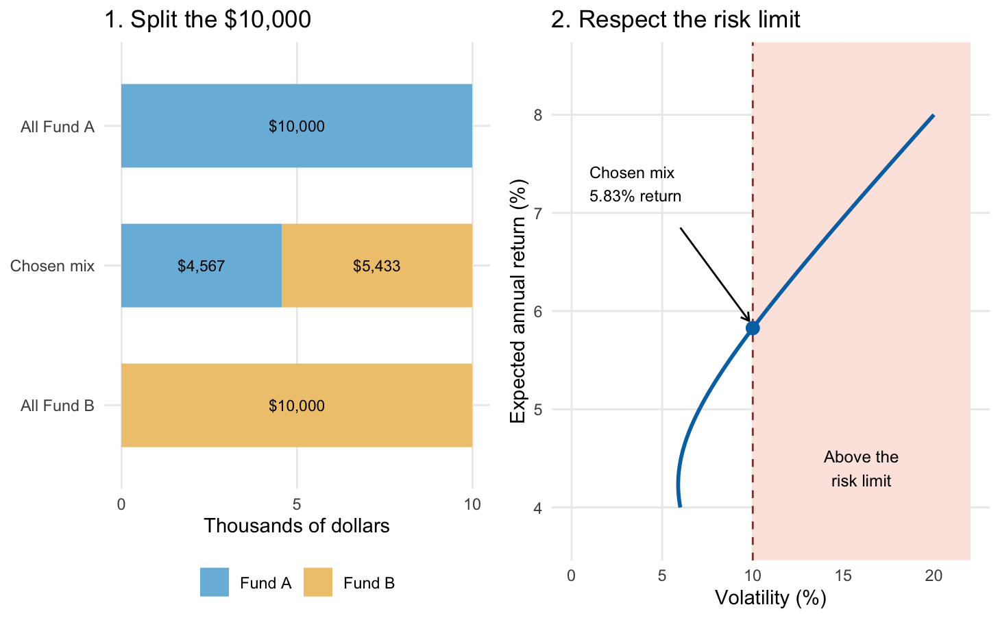
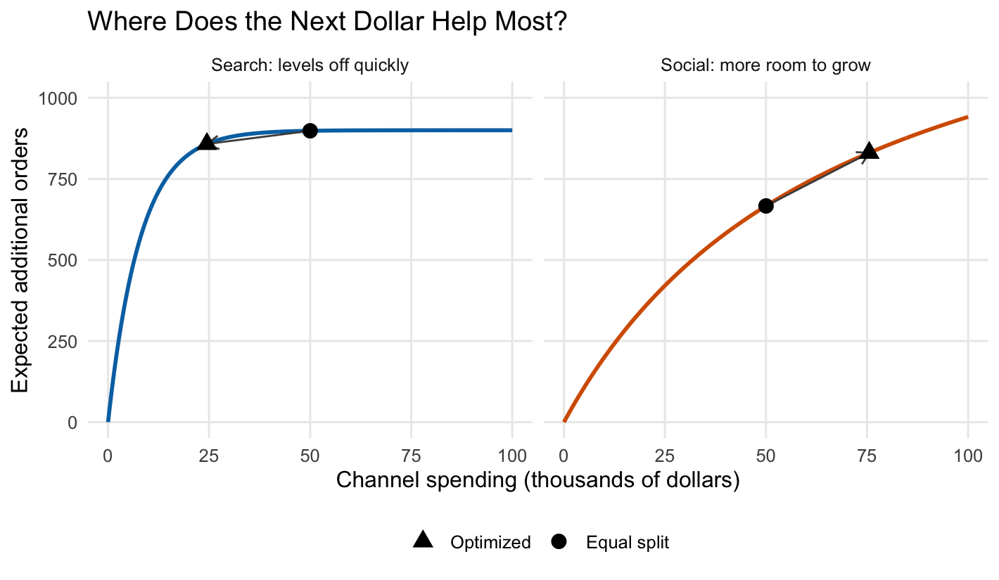

Why can a mathematically correct optimization formula still lead to a poor computational implementation?
Why is a closed-form solution useful even when numerical optimization will eventually be used?
Why is bisection more reliable than Newton’s method, and what is the computational cost of that reliability?
What additional information does Newton’s method use compared with bisection?
Why can different starting values lead to different solutions for the same objective function?
What role does the step size play in gradient descent?
Why might poor scaling make optimization difficult?
Why is solving
\[
H\boldsymbol{d}
=
-\nabla Q
\]
usually preferable to explicitly computing \(H^{-1}\)?
Why can BFGS be useful when the Hessian is expensive to compute?
Why might a metaheuristic algorithm deliberately accept a worse solution?
When would you prefer simulated annealing over a deterministic local optimizer?
What is the main difference between simulated annealing, genetic algorithms, and particle swarm optimization?
Why does fewer iterations not necessarily imply lower computational cost?
How are optimization, likelihood estimation, and statistical inference connected?
3.19 Takeaways
Many statistical estimators are solutions to optimization problems.
Closed-form solutions are convenient but often unavailable.
Numerical optimization connects statistical theory with practical computation.
Root finding is closely related to optimization.
Bisection is reliable but relatively slow.
Newton’s method is fast near a solution but uses derivative information.
The secant method approximates derivative information numerically.
Multivariate optimization replaces derivatives with gradients and Hessians.
Gradient descent uses local first-order information.
Newton’s method uses curvature information through the Hessian.
BFGS approximates curvature without repeatedly computing the full Hessian.
Scaling can strongly affect computational performance.
Deterministic methods are usually efficient for smooth, well-behaved objectives.
Metaheuristic methods trade speed and predictability for broader exploration.
Simulated annealing can escape local optima by occasionally accepting worse solutions.
Genetic algorithms and particle swarm optimization use populations of candidate solutions.
There is no universally best optimization algorithm.
A good computational method balances accuracy, stability, speed, and exploration.
3.20 Optimal topic: Real-World Applications
The applications in this chapter illustrate two uses of optimization: estimating unknown parameters from data and choosing an action under practical constraints. We will connect these ideas to drug development, investment portfolios, factory scheduling, and advertising budgets. The examples use simplified models of these real applications.
The situation. A research team measures drug concentration and the improvement in a biomarker. At low concentrations, more drug may produce a much larger response. At high concentrations, the response may level off. The team wants a curve that describes this pattern.
The computer’s job: adjust the curve until its predictions are close to the observed dots. The following measurements are invented for illustration.
Figure 3.1: The same illustrative measurements, before and after fitting. Vertical gaps show prediction errors. Optimization reduces the sum of their squares from about 1382 to 29.
Read the picture. The dots stay fixed. The optimizer changes the curve’s starting height, upper level, and how quickly it bends. Shorter vertical gaps mean better predictions of these measurements.
Decision variables. Choose the three parameters of the curve
We impose no sign restriction on the baseline \(E_0\). In the R code, setting \(E_{\max}=e^{\theta_2}\) and \(EC_{50}=e^{\theta_3}\) enforces positivity automatically, while \(E_0=\theta_1\) remains unrestricted.
Optimal solution (numerical). For the illustrative measurements, the fitted parameters are approximately
The minimum found numerically corresponds to the small squared gaps in the right panel. Because this is a nonlinear fitting problem, BFGS convergence alone does not certify a global minimum; different starting values can lead to different results.
Why an algorithm? Moving one parameter changes many predictions at once. The parameters enter nonlinearly, so ordinary linear regression cannot estimate all three together. BFGS, used above, repeatedly proposes changes that reduce the total squared gap.
Try explaining it: In the right panel, what has changed: the measurements, the model parameters, or both?
The situation. Suppose a fund manager has $10,000 to invest. Begin with just two funds and the following illustrative annual estimates:
Choice
Expected return
Volatility (standard deviation)
Fund A
8%
20%
Fund B
4%
6%
Fund A offers more expected return, but its returns vary more. Assume a return correlation of 0.10. The manager wants the highest expected return while keeping portfolio volatility at or below 10%. Volatility measures variation; a 10% limit does not cap possible losses at 10%.
Code
finance_risk <-function(w) {sqrt((0.20* w)^2+ (0.06* (1- w))^2+2*0.10*0.20*0.06* w * (1- w))}finance_return <-function(w) 0.08* w +0.04* (1- w)# Expected return increases with w; find the largest permitted weight.finance_weight <-uniroot(function(w) finance_risk(w) -0.10,c(0, 1), tol =1e-10)$rootfinance_choices <-data.frame(Choice =factor(c("All Fund A", "Chosen mix", "All Fund B"),levels =c("All Fund B", "Chosen mix", "All Fund A")),A =c(1, finance_weight, 0))finance_bars <-rbind(data.frame(Choice = finance_choices$Choice, Fund ="Fund A",Amount =10* finance_choices$A),data.frame(Choice = finance_choices$Choice, Fund ="Fund B",Amount =10* (1- finance_choices$A)))finance_bars$Label <-ifelse(finance_bars$Amount ==0, "",sprintf("$%s", formatC(1000* finance_bars$Amount,format ="f", digits =0, big.mark =",")))finance_allocation_plot <-ggplot(finance_bars, aes(Amount, Choice, fill = Fund)) +geom_col(width =0.6, position =position_stack(reverse =TRUE)) +geom_text(aes(label = Label), size =3,position =position_stack(vjust =0.5, reverse =TRUE)) +scale_fill_manual(values =c("Fund A"="#79BADD", "Fund B"="#F0C77C")) +scale_x_continuous(limits =c(0, 10), breaks =c(0, 5, 10)) +labs(title ="1. Split the $10,000", x ="Thousands of dollars", y =NULL,fill =NULL) +theme_minimal(base_size =11) +theme(legend.position ="bottom", panel.grid.minor =element_blank())finance_grid <-data.frame(Weight =seq(0, 1, length.out =501))finance_grid$Risk <-100*finance_risk(finance_grid$Weight)finance_grid$Return <-100*finance_return(finance_grid$Weight)finance_risk_plot <-ggplot(finance_grid, aes(Risk, Return)) +annotate("rect", xmin =10, xmax =22, ymin =-Inf, ymax =Inf,fill ="#FCE6E1") +geom_path(linewidth =1, colour ="#0072B2") +geom_vline(xintercept =10, linetype ="dashed", colour ="#A33A2B") +annotate("point", x =10, y =100*finance_return(finance_weight),size =3, colour ="#0072B2") +annotate("text", x =16, y =4.4, label ="Above the\nrisk limit", size =3.2) +annotate("text", x =1, y =7.3, hjust =0,label ="Chosen mix\n5.83% return", size =3.1) +annotate("segment", x =6, xend =9.8, y =6.85, yend =5.9,arrow = grid::arrow(length = grid::unit(0.07, "inches"))) +coord_cartesian(xlim =c(0, 22), ylim =c(3.7, 8.5)) +labs(title ="2. Respect the risk limit", x ="Volatility (%)",y ="Expected annual return (%)") +theme_minimal(base_size =11) +theme(panel.grid.minor =element_blank())grid::grid.newpage()grid::pushViewport(grid::viewport(layout = grid::grid.layout(1, 2)))print(finance_allocation_plot,vp = grid::viewport(layout.pos.row =1, layout.pos.col =1))print(finance_risk_plot,vp = grid::viewport(layout.pos.row =1, layout.pos.col =2))grid::popViewport()

Figure 3.2: Left: three ways to split the same $10,000. Right: each point on the curve is a possible split. The selected mix has the highest expected return among points at or left of the 10% volatility limit. All inputs are illustrative.
Read the picture. Moving more money to Fund A moves us toward higher expected return, but eventually crosses the dashed risk limit. The chosen mix puts about $4,567 in A and $5,433 in B, for an expected return of 5.83% under these assumptions. All-A has a higher expected return, but is outside the allowed region.
Decision variable. Let \(w\) be the fraction of the $10,000 invested in Fund A. The remaining fraction, \(1-w\), is invested in Fund B.
Objective function. Maximize the expected annual return rate:
\[
\max_w\;R(w)=0.08w+0.04(1-w)=0.04+0.04w.
\]
Constraints. All money is invested, with no borrowing or short selling, and portfolio volatility must not exceed 10%:
The weights \(w\) and \(1-w\) already sum to one, so they enforce the $10,000 budget. Using the two standard deviations and the correlation of 0.10, the variance is explicitly
Equivalently, this return corresponds to an expected annual gain of about $582.67 on the $10,000 investment. This is the unique global maximum: within \(0\leq w\leq1\), every feasible weight lies between zero and \(w^*\), and \(R(w)\) is strictly increasing.
Why an algorithm? In this two-fund example, uniroot() locates the boundary \(\sigma(w)=0.10\). With 20 funds, sector limits, and holding limits, many weights must be chosen together. Constrained portfolio solvers handle those interacting choices. Application context: MOSEK portfolio optimization cookbook.
Try explaining it: If the dashed risk limit moved to the right, would the best allowed mix contain more or less of Fund A?
The situation. A small factory has three orders, A, B, and C. Every order must go through Cutting, then Finishing. Each machine handles one order at a time. These illustrative processing times stay the same in both schedules:
Order
Cutting
Finishing
A
4 hours
1 hour
B
1 hour
4 hours
C
2 hours
2 hours
The computer’s job: choose the order of work so that all three orders finish as early as possible.
Figure 3.3: Same orders, same machines, same processing times. Changing the sequence reduces the last completion time from 11 to 8 hours. Empty horizontal space is idle time.
Read the picture. In the top schedule, Finishing waits four hours for A. In the bottom schedule, the short cutting step for B lets Finishing start after just one hour. The machines then overlap useful work more effectively. No machine runs faster; the sequence is better.
Decision variables. Choose a start time \(S_{jm}\) for each order \(j\in\{A,B,C\}\) on each machine \(m\in\{C,F\}\), where \(C\) means Cutting and \(F\) means Finishing. Also choose \(C_{\max}\), the time by which all orders must be complete. Let \(p_{jm}\) denote the fixed processing times in the table. All orders are available at time zero, and each operation runs without interruption once it starts.
Objective function. Minimize the last completion time (the makespan):
\[
\min_{\{S_{jm}\},\,C_{\max}}\;C_{\max}.
\]
Constraints. The start times must satisfy four rules:
Work cannot start before time zero: for every order \(j\) and machine \(m\),
\[
S_{jm}\geq0.
\]
Cutting precedes Finishing: for each order \(j\),
\[
S_{jF}\geq S_{jC}+p_{jC}.
\]
A machine cannot process two orders at once: for every pair of different orders \(j,k\) and each machine \(m\),
In words, either \(j\) finishes before \(k\) starts, or \(k\) finishes before \(j\) starts. Choosing between these alternatives determines the job sequence.
Every order finishes by \(C_{\max}\): for each order \(j\),
\[
S_{jF}+p_{jF}\leq C_{\max}.
\]
Optimal solution. One optimal sequence is B, then C, then A on both machines, with the following start and end times:
Order
Cutting: start to end
Finishing: start to end
B
0 to 1
1 to 5
C
1 to 3
5 to 7
A
3 to 7
7 to 8
All times are in hours. This feasible schedule achieves
\[
C_{\max}^*=8\text{ hours}.
\]
Why is 8 hours globally optimal? Finishing requires \(1+4+2=7\) hours of work on a single machine. It cannot begin before hour 1, because even the shortest cutting operation takes 1 hour. Therefore every feasible schedule satisfies \(C_{\max}\geq1+7=8\). The schedule above reaches that lower bound, so no schedule can finish earlier. The original A-B-C schedule takes 11 hours.
For three orders, all six common orderings can also be checked. Larger factories require more systematic search; 20 jobs already give \(20!\approx2.43\times10^{18}\) possible orderings on one machine.
Why an algorithm? Constraint programming and mixed-integer optimization search subject to the rules. Simulated annealing and genetic algorithms can also explore valid schedules, though they do not certify the best possible result. This is a discrete choice problem: swapping two jobs is not a gradient step. Application context: OR-Tools job-shop scheduling.
Try explaining it: Find B in both panels. Why does doing its short cutting step early help the whole factory?
An online retailer has $100,000 for search advertising and social media. Start with a familiar decision: should it spend $50,000 on each, or split the money differently?
The situation. The first dollars spent on search work well, but that channel soon reaches many of the customers it can reach. Social media responds more gradually. We use two invented response curves to make the allocation problem visible; these are not measured campaign results.
First, look at how each channel responds to spending. A steep curve means that another dollar produces a relatively large gain. A flat curve means that another dollar adds little.
Code
marketing_curves <-rbind(data.frame(Spend =seq(0, 100, length.out =301),Channel ="Search: levels off quickly"),data.frame(Spend =seq(0, 100, length.out =301),Channel ="Social: more room to grow"))marketing_curves$Orders <-ifelse(grepl("^Search", marketing_curves$Channel),marketing_search(marketing_curves$Spend),marketing_social(marketing_curves$Spend))marketing_points <-rbind(data.frame(Spend = marketing_comparison$Search,Orders =marketing_search(marketing_comparison$Search),Strategy = marketing_comparison$Strategy,Channel ="Search: levels off quickly"),data.frame(Spend = marketing_comparison$Social,Orders =marketing_social(marketing_comparison$Social),Strategy = marketing_comparison$Strategy,Channel ="Social: more room to grow"))marketing_moves <-data.frame(Channel =c("Search: levels off quickly", "Social: more room to grow"),Spend =50,Orders =c(marketing_search(50), marketing_social(50)),NewSpend =c(marketing_fit$maximum, 100- marketing_fit$maximum),NewOrders =c(marketing_search(marketing_fit$maximum),marketing_social(100- marketing_fit$maximum)))ggplot(marketing_curves, aes(Spend, Orders, colour = Channel)) +geom_line(linewidth =1) +geom_segment(data = marketing_moves,aes(xend = NewSpend, yend = NewOrders),colour ="grey30", linewidth =0.5,arrow = grid::arrow(length = grid::unit(0.1, "inches"))) +geom_point(data = marketing_points, aes(shape = Strategy),size =3.5, colour ="black") +facet_wrap(~Channel, nrow =1) +scale_colour_manual(values =c("#0072B2", "#D55E00")) +scale_shape_manual(values =c("Equal split"=16, "Optimized"=17)) +scale_y_continuous(limits =c(0, 1000)) +labs(x ="Channel spending (thousands of dollars)",y ="Expected additional orders", shape =NULL,title ="Where Does the Next Dollar Help Most?") +guides(colour ="none") +theme_minimal(base_size =12) +theme(legend.position ="bottom", panel.grid.minor =element_blank())

Figure 3.4: Illustrative response curves. Circles mark equal spending; triangles mark the optimized allocation. Arrows show the change: reduce search spending where the curve is flat and increase social spending where more gains remain.
Read the picture. At the equal split, search is already nearly flat. Moving some of that money to social loses relatively few search orders and gains more social orders. The optimizer keeps reallocating until the next dollar has the same marginal benefit in both channels.
Now compare the decisions. The total budget stays at $100,000 in both rows. Only its allocation changes.
Figure 3.5: A visual before-and-after comparison. The optimized split spends about $24,461 on search and $75,539 on social, producing about 123 more expected orders with the same budget under the illustrative model.
The change is from about 1,565 to 1,688 expected additional orders: approximately 123 extra orders, or 7.9%, without increasing spending.
Decision variables. Let \(s\) and \(u\) be spending on search and social advertising, respectively, in thousands of dollars. For example, \(s=25\) means $25,000 spent on search.
Objective function. Maximize the expected number of additional orders:
The first term is the search contribution and the second is the social contribution. We assume these contributions add without overlap and that all orders have the same value.
Constraints. Spend the full $100,000 budget, with neither channel receiving a negative amount:
\[
s\geq0,\qquad u\geq0,\qquad s+u=100.
\]
There are no additional channel spending limits in this example. Substituting \(u=100-s\) gives the equivalent problem used by optimize():
For comparison, equal spending gives \(F(50,50)\approx1564.9293\). The optimal allocation therefore adds about 123.2183 expected orders, a 7.87% increase with the same budget.
Why is this allocation optimal? Both response curves are strictly concave, so the feasible problem has a unique global maximum. The optimum lies inside \(0<s<100\) and solves
At \(s^*\), both channels have the same marginal gain: approximately 5.2876 additional orders per $1,000 of spending. Shifting a small amount of money from one channel to the other can no longer improve the total.
Why an algorithm? Setting \(u=100-s\) leaves one adjustable number. optimize() searches for its best value. Here the total-response curve is strictly concave, so there is a unique maximum. With many channels and spending limits, this becomes a multivariate constrained problem.
Marketing tools such as Google’s Meridian apply this response-curve idea to budget allocation. In practice, the curves must be estimated and validated; the optimizer’s result depends on their accuracy. Application context: Meridian budget optimization.
Try explaining it: Point to the two equal-length budget bars. Where do the extra orders come from if no extra money is spent?